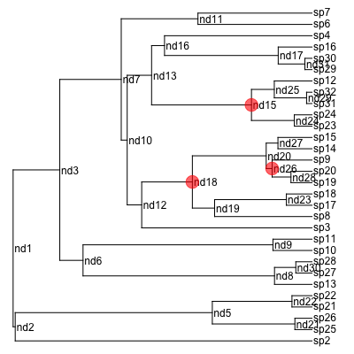

make.bisse.split(tree, states, nodes, split.t, unresolved=NULL, sampling.f=NULL, nt.extra=10, strict=TRUE, control=list()) make.bisse.uneven(tree, states, nodes, split.t, unresolved=NULL, sampling.f=NULL, nt.extra=10, strict=TRUE, control=list())
ape “phylo” format.NA if the state is unknown. This vector must have
names that correspond to the tip labels in the phylogenetic tree
(tree$tip.label). For tips
corresponding to unresolved clades, the state should be NA.nodes (see
Details).c(0.5, 0.75) means that half of species in state 0
and three quarters of species in state 1 are included in the
phylogeny. By default all species are assumed to be known.
Alternatively, with split models this can be a list of length
(length(nodes) + 1), each element of which is a vector of
length 2. The first element is the sampling fraction for the
“background” group, the second element corresponds to the
clade subtended by nodes[1], and the ith element
corresponding to the clade subtended by nodes[i+1].states vector is always checked to make sure
that the values are 0 and 1 only. If strict is TRUE
(the default), then the additional check is made that every
state is present. The likelihood models tend to be poorly behaved
where states are missing.make.bisse.Create a likelihood function for a BiSSE model where the
tree is partitioned into regions with different parameters.
Alternatively, make.bisse.uneven can be used where different
regions of the tree have different fractions of species known.
Branching times can be controlled with the split.t
argument. If this is Inf, split at the base of the branch (as in
MEDUSA). If 0, split at the top (closest to the present, as in
the new option for MEDUSA). If 0 < split.t < Inf then we split
at that time on the tree (zero is the present, with time growing
backwards).
TODO: Describe nodes and split.t here.
pars <- c(0.1, 0.2, 0.03, 0.03, 0.01, 0.01) set.seed(546) phy <- tree.bisse(pars, max.taxa=30, x0=0) ## Here is the phylogeny: plot(phy, show.node.label=TRUE, label.offset=.1, font=1, cex=.75, no.margin=TRUE)## Here is a plain BiSSE function for comparison: lik.b <- make.bisse(phy, phy$tip.state) lik.b(pars) # -93.62479[1] -93.62479## Split this phylogeny at three points: nd15, nd18 and nd26 nodes <- c("nd15", "nd18", "nd26") ## This is the index in ape's node indexing: nodes.i <- match(nodes, phy$node.label) + length(phy$tip.label) nodelabels(node=nodes.i, pch=19, cex=2, col="#FF000099")
## To make a split BiSSE function, pass the node locations and times in: lik.s <- make.bisse.split(phy, phy$tip.state, nodes.i) ## The parameters must be a list of the same length as the number of ## partitions. Partition '1' is the root partition, and partition i is ## the partition rooted at the node[i-1] pars4 <- rep(pars, 4) pars4[1] 0.10 0.20 0.03 0.03 0.01 0.01 0.10 0.20 0.03 0.03 0.01 0.01 0.10 0.20 0.03 [16] 0.03 0.01 0.01 0.10 0.20 0.03 0.03 0.01 0.01## Run the likelihod calculation: lik.s(pars4) # -93.62479[1] -93.62479## These are basically identical (to acceptable tolerance) lik.s(pars4) - lik.b(pars)[1] -1.397798e-08## You can use the labelled nodes rather than indices: lik.s2 <- make.bisse.split(phy, phy$tip.state, nodes) identical(lik.s(pars4), lik.s2(pars4))[1] TRUE## This also works where some tips are unresolved clades. Here are a ## few: unresolved <- data.frame(tip.label=c("sp12", "sp32", "sp9", "sp22", "sp11"), Nc=c(2,5,3,2,5), n0=c(1, 4, 3, 2, 4), n1=c(1, 1, 0, 0, 1)) ## Plain BiSSE with unresolved clades: lik.u.b <- make.bisse(phy, phy$tip.state, unresolved=unresolved) lik.u.b(pars) # -139.3688[1] -139.3688## Split BiSSE with unresolved clades: lik.u.s <- make.bisse.split(phy, phy$tip.state, nodes, unresolved=unresolved) lik.u.s(pars4) # -139.3688[1] -139.3688lik.u.b(pars) - lik.u.s(pars4) # numerical error only[1] 3.914209e-09